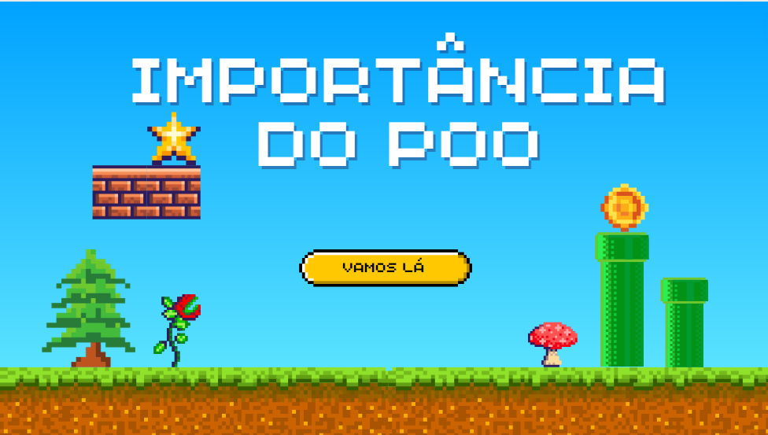
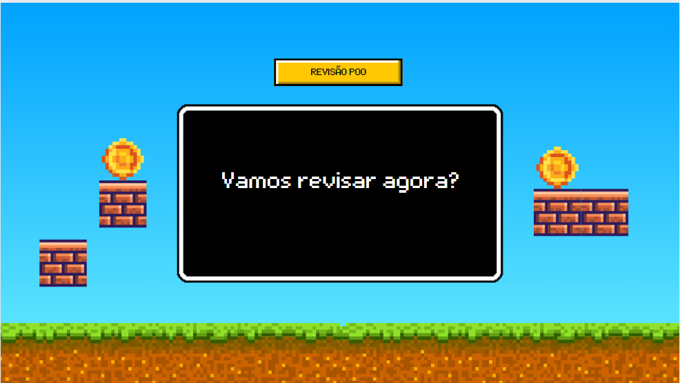
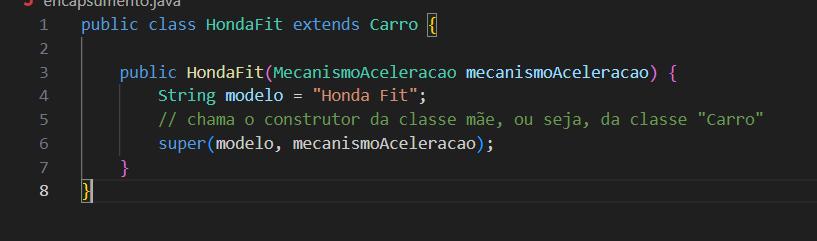
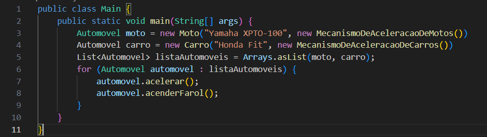
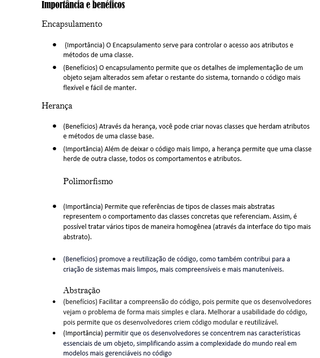

Você já se perguntou como os programadores conseguem criar sistemas complexos e organizados que funcionam perfeitamente? Conheça o POO, nesse artigo venha aprender como funciona o POO e ficar por dentro do mundo da programação.
Nesse artigo você verá:
Conceitos fundamentais do POO
Encapsulamento
Herança
Polimorfismo
Abstração
Exemplos Práticos em Java
Questões Comuns e Respostas
Bem, se você está se questionando da primeira pergunta que te fiz a resposta está na Programação Orientada a Objetos
(POO), ele é um dos principais modelos de programação. Em vez de você focar apenas em funções e procedimentos como em outros paradigmas, a POO se concentra em "objetos", que são basicamente representações de coisas do mundo real dentro de um código.
Então imagine que você está criando um jogo qualquer. Nesse jogo, você tem personagens, veículos, armas etc. Cada um desses elementos pode ser representado como um objeto. Esses objetos são criados a partir de "classes", que funcionam como uma espécie de molde ou modelo.
Entenda que as classes são como as plantas de um prédio. Elas definem o que um objeto será, quais atributos (características) e métodos (ações) ele terá. Por exemplo, a classe "Carro" pode definir que todo carro tem cor, modelo e um método para acelerar. Já os objetos são as instâncias das classes. Ou seja, quando você cria um objeto a partir de uma classe, está criando um "exemplar" específico daquela planta. Um objeto "Carro" poderia ser um carro azul, modelo Sedan, que pode acelerar até 180 km/h. E por fim os atributos e métodos, os atributos são as características do objeto, como a cor e o modelo do carro. Métodos são as ações que o objeto pode realizar, como acelerar ou frear.
Sacou?

Bem, já sabemos bem como o POO funciona, mas você sabe sua importância e seus benefícios no mundo da programação?

O POO por sua funcionalidade, acaba sendo um código sempre muito organizado, além disso a facilidade de manutenção por não ser um código sempre muito extenso e sua simplicidade no desenvolvimento de sistemas complexos. Ele é extremamente importante pelo fato de sua adoção e popularidade, pois a maioria das linguagens de programação modernas (como Java, Python, C++) suporta POO.

Portanto podemos entender com tudo isso que a POO ajuda a organizar o código de forma mais intuitiva, facilita a reutilização de código e torna mais fácil a manutenção e a extensão dos programas.
PS: SEMPRE faça um código simples/ padrão, pense que outras pessoas podem querer entender seu código, e ou analisar.
Muito bem, agora que você já entendeu o básico do POO, vamos entender os pilares/ entrelinhas dele
Começando pelo encapsulamento.

Quando pesquisamos o que é encapsulamento no google aparece exatamente isso: “Encapsulamento é o processo de esconder todos os detalhes de um objeto que não contribuem para as suas características essenciais.” mas calma, vou te explicar de jeito muito fácil que vai fixar em sua cabeça pense no seguinte, imagine que você tem um super dispositivo de controle remoto. Dentro dele, tem várias funções secretas e botões que fazem coisas muito legais. Mas, você só vê o controle remoto do lado de fora, e só precisa saber como usar os botões, sem se preocupar com a engenharia interna. Isso é o encapsulamento em programação. Ele oculta os detalhes complexos e mostra apenas o que é necessário para usar um objeto. Assim, você pode usar o objeto sem precisar saber como ele funciona internamente.
Portanto, Na POO, um atributo ou método que não é visível de fora do próprio objeto é chamado de "privado" e quando é visível, é chamado de "público".

Vamos ver um exemplo em JAVA

Ficou mais fácil né?!

Nosso próximo assunto é.....
Herança
E se você aí lendo esse artigo pensou qual relação entre o dinheiro que os mortos deixam aos entes queridos com a programação vem que vou te explicar.

Pense na herança como uma forma de passar características de um "pai" para um "filho". No mundo da programação, é como se você tivesse uma classe básica, que pode ser chamada por um exemplo de "Animal". Essa classe pode ter características como "comer" e "dormir". Agora, você cria uma classe "Cachorro" que herda essas características da classe "Animal", mas também adiciona suas próprias funções, como "latir". A classe "Cachorro" então usa tudo que foi definido na classe "Animal" e ainda pode adicionar suas próprias especificidades. Fez sentido? É basicamente o que expliquei lá na introdução do nosso artigo.

Vamos ver uma situação em JAVA

Vamos entender um pouco de polimorfismo
De cara parece um bicho de sete cabeças, mas calma é bem simples. Imagine que você tem um truque de mágica que pode transformar
qualquer objeto em diferentes formas, dependendo de como você deseja usá-lo. Polimorfismo é isso na programação: a capacidade de
um método ou função fazer coisas diferentes dependendo do tipo de objeto que está lidando. Por exemplo, você pode ter uma função
chamada "fazerBarulho". Se você chamar essa função para um "Cachorro", ele vai latir; se chamar para um "Gato", ele vai miar. O
mesmo método se comporta de maneira diferente, dependendo do tipo de objeto.
Pense nisso...

Vejamos um exemplo em java

E por fim podemos falar da abstração
Pense que na abstração como uma maneira de simplificar a realidade para torná-la mais fácil de entender. Imagine um carro: você só precisa saber como dirigir, acelerar e frear, certo? Você não precisa se preocupar com cada detalhe do motor ou da engenharia. Na programação, a abstração faz algo parecido. Ela te permite criar uma interface simples para usar um objeto, enquanto oculta os detalhes complexos que estão por trás dessa interface. Isso torna o código mais fácil de entender e usar.

Agora vamos dar uma passadinha nas importância e benefícios

Se precisar de mais ajuda vou te deixar uma imagem e dois videos complementares para ampliar seu conhecimento
 Curso em vídeo_POO pilares
Curso em vídeo_POO pilares
Curso em vídeo_POO
Pessoal esses foram os sites que eu pesquisei, segue minhas referencias
1
2
3
4
5